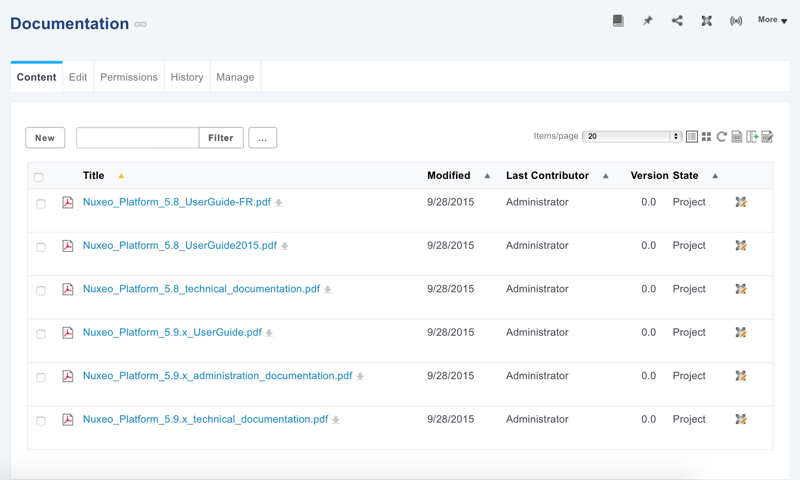
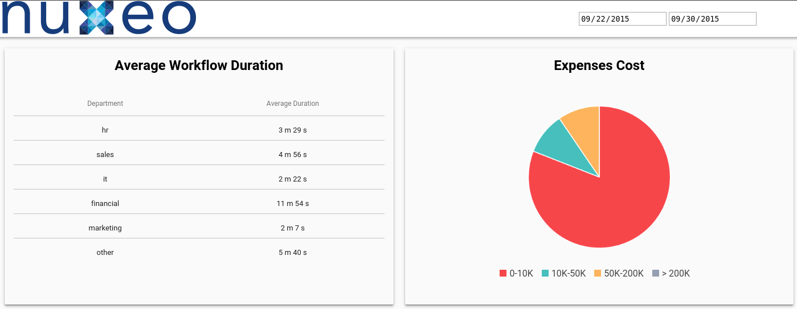
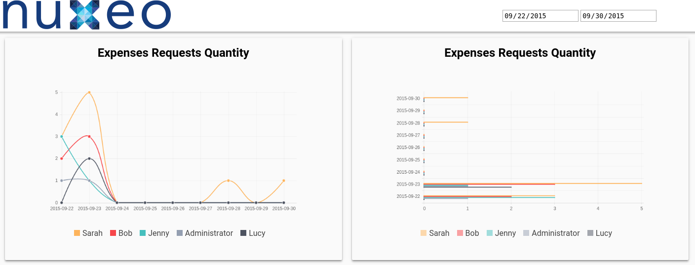
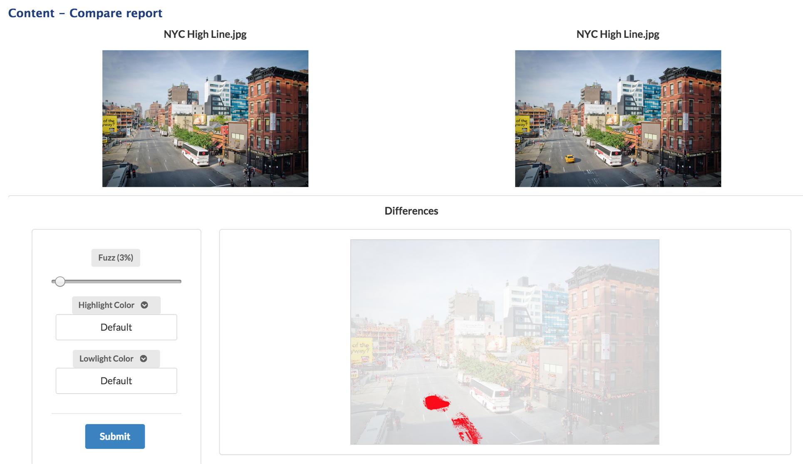
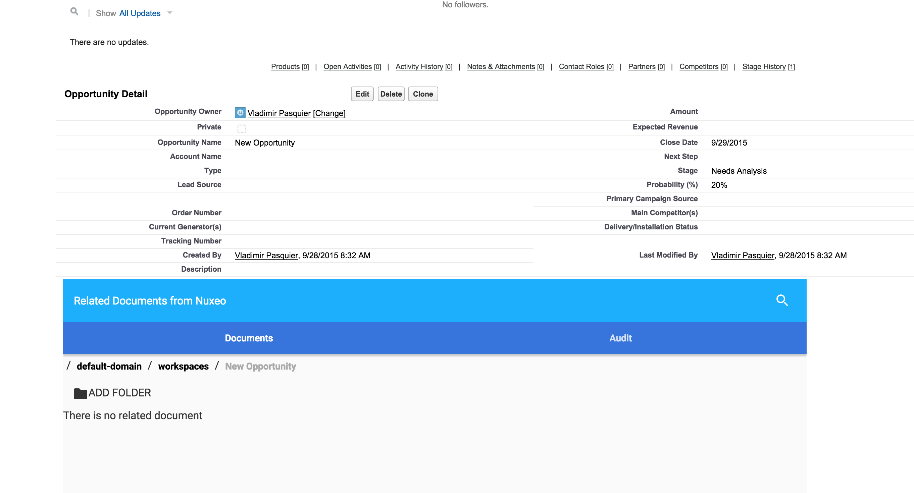
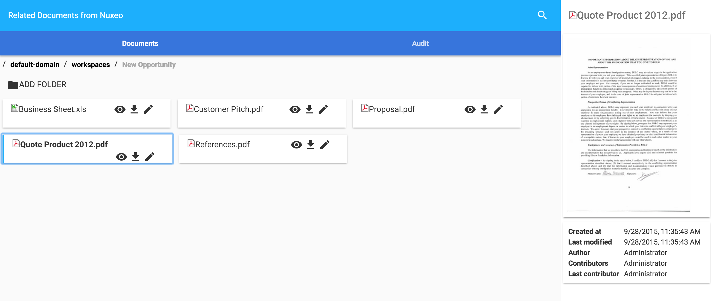
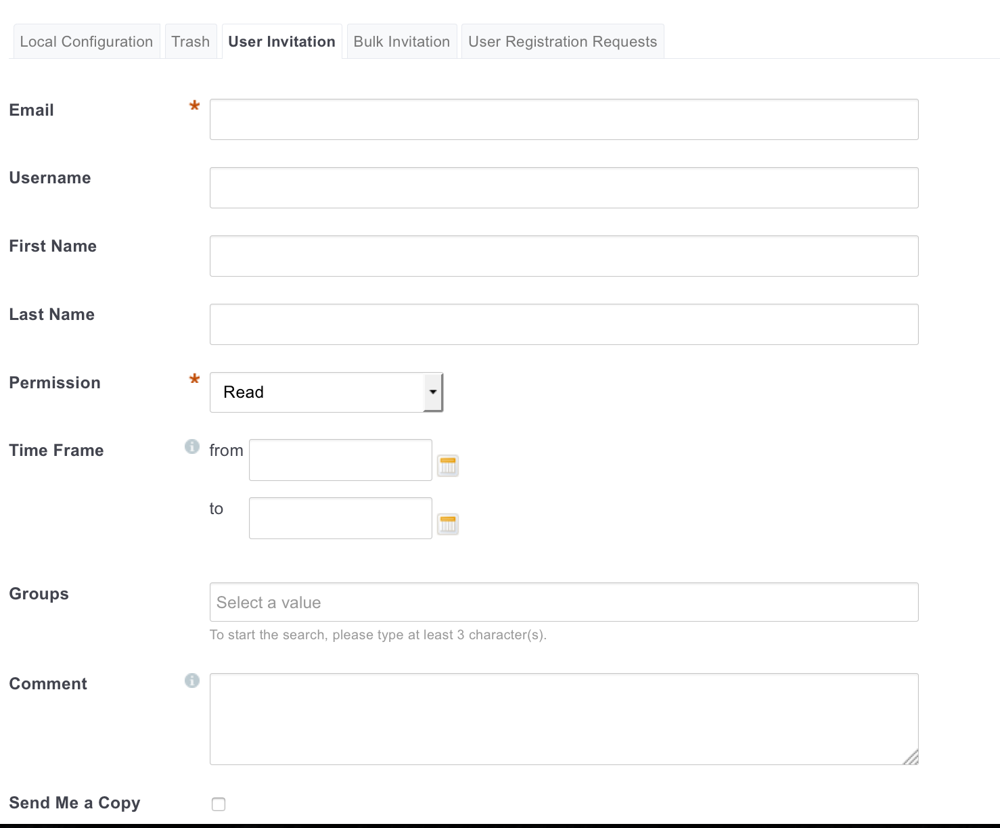

Nuxeo Platform 7.4 Release Notes
For Users
ACLs
The Permissions tab (former Access Rights tab) has been rewritten to add new features and improve global user experience. A new tab has also been added in the Admin Center for offering new ACLs management capabilities.
- Permissions can be time based (from ... to ...).
- User who is assigned a permission on a document can be notified when the permission becomes effective.
- Permissions tab is available in read only for everybody making it easy to know who has access to what.
- In the Admin Center, it is possible to search for any permission that was assigned to anybody anywhere.
- It is also possible to purge permissions given to a specific user in a specific place (or everywhere).


Drive Edit Link on Documents Listings
For each document that has a file, it is now possible on the main documents listing view to edit one of them with the Drive Edit feature.

Data Visualization
A new addon deploys dashboards accessible from workflow models in Admin Center. Those dashboards provide information about the workflows like average execution length, top assignees, etc. They are samples of what can be done on workflow data processing thanks to our new data visualization kit.
Furthermore a new permission has been added and can be used on workflow models for determining who has access to the workflow related information aggregation.


Nuxeo Review Workflows Dashboards is available from the Nuxeo Marketplace.
Search Improvements
Quick Search Now Uses Elasticsearch
Elasticsearch is used for the quick search, which offers better performances and allows to use specific search behaviors such as phrase search, ngrams, etc..
Better Management of Accents
Default fulltext analyzer now can search on accented word with wildcard (déj*) and supports HTML tags convertion (indexing real accents and not the strings that produce the accents in HTML).
Technical Metadata Removed from Index
Irrelevant fields that add noise to index are now removed (ex:thumb:thumbnail, picture:views, common:icons).
Search Events Logged
Audit Trail is enriched with a new type of events: search events. It is possible to enable search tracking on a per search filter basis.
Do Not Display Search Result First
An option is now available on content views so that search is not run the first time the search page is displayed.
Look'n Feel Refresh
The Nuxeo Platform UI has been refreshed and updated in the mean time for a better experience and a smoother feeling. In addition we increased the adaptiveness and reactiveness of the forms, and the readability of tables. The login page layout has been updated. No more top bar, no more links, just the essential. The page layout has been reviewed to improve responsiveness. Left columns and main area are now independant, you can browse and scroll the part you need without disturbing the rest of the layout. The footer is now only visible at the end of the scroll, to let you focus on your tasks and things that matters in your workflow.
Labels Have Been Capitalized
We did an effort for correctly capitalizing most of the labels of the default application.
Unpublish a Media from Nuxeo Platform Web UI
A button has been added to be able to unpublish a video from Wistia or YouTube directly from Nuxeo Platform Web UI.
Compare Images
The Nuxeo Diff plugin now works with pictures, and displays a dialog where the user can spot the differences between two pictures (must be of the same format and same dimensions). The dialog also lets the user set-up a "Fuzzy" comparison parameter (to remove noise when comparing JPEGs for example), and to choose the colors used for to highlight the differences.

Preview Screenshot and Storyboard Generation Can Be Configured
Preview screenshot and storyboard can now be configured on the VideoService:
- When to take the preview screenshot (percentage of the video duration)
- Storyboard thumbnails count
- Minimum duration of the video to generate storyboard (0 means always, < 0 means never)
Nuxeo for Salesforce
A new addon is available for integrating Nuxeo Platform and Salesforce. Nuxeo for Salesforce enables to drag'n drop documents from Salesforce UI into the Nuxeo Platform, with automated information linking (customer name, opportunity ID, ...). From Salesforce user can browse SF objects related documents, see their history, use Direct Edit link, metadata, etc. This addon is also available as a plugin on the Salesforce AppExchange marketplace.


Default Filename for Renditions
Rendition filenames are now computed in the Automation Renderer class, with the following logic: if the blob has a filename it uses it otherwise it uses the document title. If the blob has an extension, it uses it, or it looks for the mime-type, or it chooses ".bin".
New Samples for Template Rendering
A set of new samples have been implemented for letting you discover the best of what you can do with Nuxeo Platform Rendering. Have a look at them by installing the Nuxeo Template Rendering Samples package.
No More Limit with CMIS Upload
The 4GB limit has been removed.
Invite a User with Email Only
It is possible to specify only the email when inviting a user, in that case email will be used as the username. With Shibboleth plugin, it will be changed at first logging, depending on the configuration.

For Developers
Data Visualization
A set of elements (custom HTML tags) has been implemented for fetching aggregated data on the workflows, the repository and the audit. Combined with graphical elements (like Google Chart or Chart.js libraries) they allow to build meaningful business dashboards very quickly.
Ex: The one below allows to get arrays of information on data stored in documents of the repository (of type Insurance Claim).
The one below fetches aggregated information on the TravelExpenseValidation workflow.
More information can be found in the Nuxeo Data Visualization documentation.
Asynchroneous Conversions
The Conversion service has been improved to handle asynchroneous conversions. This new feature has also been exposed on the REST API, with new endpoints. Launch an asynchronous conversion by doing a POST on the @convert adapter, with the parameter async to true:
This returns a JSON object with the following data:
The new endpoint available to poll and get the result of a conversion:
For conversion not completed, it returns the status of the conversion with a 200 HTTP code:
For conversion completed, it returns the result URL in the Location header with a 303 HTTP code.
This returns the result Blob of the conversion if any, returns 404 if there is no conversion / no result yet for the conversion.
Upload by Chunks
The batch upload REST API has been improved to allow:
- Batch initialization
- File upload in chunks
- Getting information about the chunks uploaded for a given file
- Resumable upload
- It allows to manage upload resume with enough granularity (restart with chunk x)
- It allows multiplexing (upload on multiple TCP streams)
- It allows to overcome the limitations of some reverse proxies (limits the risk of having a POST considered as too big)
- Nuxeo Drive
- Drag and drop
- Bulk import
- JS client
Elasticsearch Passthrough: Audit Index and Contribuable Filters
The Elasticsearch API passthrough now allows to hit different indexes, like the audit one. Also, an extension point has been added for being able to plug different logics of filtering depending on the index name that is hit. For instance for the "workflow" index, a logic has been added for returning only audit events that are related to the workflow instances for which the workflow model is one on which the user has the permission "Data Visualization". Here is an exemple of such a contribution:
More information on the Nuxeo Elasticsearch Passthrough documentation.
Batch Manager Uses the Transiant Store
Now the Batch Manager relies on the Transient Store to allow several implementations among which the Redis one that is cluster aware.
Theme Removal and Styling Methods Evolutions
Former Theme Framework has been Removed
The page layout is now relying on a standard XHTML page instead of an XML contribution to Nuxeo runtime extension points.
JavaScript and CSS resources to be presented on the page are now served by a wro4j servlet (http://wro4j.github.io/wro4j/).
This allows to use standard ways of managing these resources, and eases up style customization through Studio, thanks to standard CSS cascading features.
Also, the favicon can now be customized by flavor (like the logo already was).
Updated documentation and migration instructions are available.
From .css to Sass .scss
The styles framework is now using Sass. Thanks to this major evolution of Nuxeo's styles framework, the styles will be updated in the next versions of the product to have a cleaner structure, a neat logic, and have a better maintenability. The variables customizable by Studio are contained in one file, default_variable.scss. The old variables used by the Theme engine are now obsolete and will be moved to theme-webapp-compat.
DIV Instead of Tables
The container widget used in Nuxeo Studio has been lightened and displays now a div instead of a table on some cases. The main left column is now independant from the main area, allowing user to scroll only in the required area.
ACLs and Security Framework
New Methods on Java ACL Object
New methods were added on ACL object:
- blockInheritance(String username)
- unblockInheritance()
The ACL#addACE method implementation was modified to take care of the ACLs order: method take care of the ACLs order:
- inherited ACL always at the end
- local ACL at the end, but before inherited if present
- any other ACL before local and inherited
New Content Enricher: Allowed Permissions
A new enricher "AllowedPermissions" allows to fetch accepted UI Permissions for the given document according to the permission extension point.
File Download Security Policy
In addition to the permissions applying to a document, which restrict access to a document as a whole, it's now possible to specify more fine-grained permissions to disallow the download of some file attachments. To additionally restrict the download of a given blob inside a document, you can contribute to the following extension point:
In the JavaScript context, access is provided when relevant to the Document, the XPath where the file is stored, the rendition name, the current user, the blob itself, and more contextual information.
Nuxeo Elements
The Nuxeo team has started implementing some Web Components, i.e. custom HTML elements that you can include in your HTML page, wherever that one is hosted. This set of custom elements allows to fetch data from the Nuxeo Platform: documents, directories, users. It also allows to easily execute some rest calls as well as some Nuxeo Automation operations calls. Those elements are a way to build an integration very quickly between a portal and Nuxeo Plaform, or any tierce application and Nuxeo Plaform. That's what was used for implementing the Salesforce connector. See the list of existing elements as well as a quick start.
Runtime Configuration Service
A new extension point has been added to define configuration properties to be checked by application code. This allows to tweak some of the application behaviours thanks to standard runtime contributions, in particular from a Studio project. Here is a sample contribution to use ajaxified tabs:
Those configuration properties aim at being at application level while the nuxeo.conf properties will be assigned to deployment level.
New and Enriched Audit Events
Search Events
A new parameter on the page provider allows to enable audit on page providers, thanks to an implementation in the AbstractPageProvider class that logs:- The PageProvider name
- The PageProvider class
- The parameters of the query
- The search document model if any
- The resulting query (NXQL or native)
Tracking can be enabled at the Pageprovider level at the XML Contribution level, by just adding:
or in nuxeo.conf with the property:
Workflow Events
Information logged on workflow events has been greatly extended and more events are logged. You can find the details in the documentation.
Automation Scripting: Documents are Returned as DocumentWrappers
Documents (input, output, etc.) are now DocumentWrappers like in Automation Chains, allowing to use same sytnax such as Document["dc:title"].
New Insert Zone on Content Views
A new include zone, "bottom_buttons", has been added on content views. It can be easily overriden by JSF Templating composition.
New API to Compare Pictures
The org.nuxeo.diff.pictures.DiffPictures class allows to compare two pictures (must be same format and same dimensions), either from two Documents or two Blobs, and returns the image (as Blob) of the difference. Parameters can be used to setup the fuzz and the highlight colors. It requires ImageMagick.
Use \ to escape wildcards in NXQL LIKE
Possibility has been added to escape _ and % wildcards using a \ in a LIKE query:
This will only match foo_ but not for instance foo1. Without the \ it matches foo_ and foo1. This is now true for all backends that make use of NXQL Queries: VCS, MongoDB, Elasticsearch.
No Search On First Display
When accessing the Search tab for the first time, the rendering of results trigger a search that presents all documents. Some users would rather wait for the search filter form to be submitted at least once for this search to be triggered. This can be handled by detecting if user has already clicked on "Filter" at least once. Display of results should also be adapted when search has not been performed yet. The content view accepts a boolean property for this behaviour, as well as a customizable sentence to display when no result is shown because of this setting:
New Java API can be used to adapt display:
- ContentView#isWaitForExecution()
- ContentView#isExecuted()
- ContentView#getWaitForExecutionSentence()
CMIS
ETag for CMIS Renditions
CMIS renditions now support an ETag like regular CMIS streams.
Flag to Allow Computation of CMIS Renditions Info
Set framework property org.nuxeo.cmis.computeRenditionInfo to true to have all renditions return a width, height, length and MIME type.
Template Rendering Samples
Installing Nuxeo Template Rendering package won't install samples anymore, which avoids you to have undesired documents in the repository. Updated sample documents are now available in a dedicated addon, NUxeo Template Rendering Samples.
Cluster Invalidator Made Pluggable
To customize the cluster invalidation mechanism for VCS, you can now define in the repository descriptor:
Here the class implements org.nuxeo.ecm.core.storage.sql.ClusterInvalidator. The default is org.nuxeo.ecm.core.storage.sql.jdbc.JDBCClusterInvalidator.
Core-IO tooling For Transtypage
Core-io can now be used to handle a migration between two Nuxeo repositories where there are some changes in the doc types or other kind of transformations. Several "transformers" have been added:
- DoctypeToFacetTranslator(String docType, String newDocType, String facet)
- FacetRemover(String docType, String facet)
- FieldMapper(String srcSchemaName, String srcField, String dstSchemaName, String dstField)
- SchemaRemover(String docType, String schema)
- SchemaRenamer(String srcSchema, String dstSchema, String dstPrefix).
Ex:
For Administrators
Redirect Downloads to a Content Delivery Network
The S3 Binary Manager has evolved so that it is possible to let the user download blobs directly from S3 without having the blob go through the Nuxeo Platform server. The security has been taken care of thanks to signed URLs mechanism. With the same approach it is possible to extend the default binary manager and plug to any CDN (CloudFront, Akamai, ...). To enable, use:
To configure the expiration (in seconds) for the redirect URLs, use:
You should also configure S3.
nuxeoctl --strict start
nuxeoctl --stric start will abort with an error code when a component is not started or when there is a server already running. This allows you to ensure that the server was started correctly. For instance when elasticsearch.enabled is set to true, start will abort if Elasticsearch is not available.
nuxeo.conf Password Encryption
Sensitive configuration data can be encrypted to avoid clear data in the configuration files, especially nuxeo.conf. New commands usage:
See "nuxeoctl help" and online documentation.
Workflow Optimisations
Several queries that list tasks and workflow models in user's views have been optimized, leading to a quicker display when a lot of tasks are in the repository and a reduced load for the database.
Live Connect Configuration Improvements
Cloud Services providers' file pickers no longer open if not properly configured in the Admin Center and a proper error message in the UI is now displayed.
File widget no longer displays an upload button for Cloud Services providers that are not enabled.
Groups Defined Both on SQL Locally and in LDAP Directory
For directories that are only read, it's sometimes useful to have a reference field that has several definitions to external directories. For instance the "groups" information of the user directory could come from two different ways of defining groups. This is something that works only for read though, because on write we wouldn't be able to know to which reference the write should be done. So with this feature a directory field can have several references:
New Marketplace Packages
- nuxeo Diff Pictures: This package requires Nuxeo Dam, installs Nuxeo Diff (if not already installed), and uses ImageMagick.
- Template Rendering Samples: This package provides a set of new samples to let you discover the best of what you can do with Nuxeo Platform Rendering.
- Nuxeo for Salesforce: This Nuxeo Platform and Salesforce integration enables to drag'n drop documents from the Salesforce UI into the Nuxeo Platform, with automated information linking (customer name, opportunity ID, ...).
- Nuxeo Review Workflows Dashboards: This package provides dashboards that show information about the workflows like average execution length, top assignees, etc.
Annotations Make Use of VCS Relation Graph
Relations are now by default stored as core relation objects with document type AnnotationRelation. It is possible to switch back to Jena storage, see detailed Upgrade Notes.
Redis Implementation of Cluster Invalidation Logic
ClusterInvalidator implementation based on Redis is replacing the SQL one. To use it edit the repository contrib and add:
Invalidations are sent and received using the Redis pubsub messaging on the channel: nuxeo:inval:default:channel (default being the name of the repository). There is a Redis HSET created for each Nuxeo node with the following key: nuxeo:inval:default:nodes: nodeId
Redis-Based Implementation of the UIDSequencer
A Redis implementation of the UID Sequencer is available. In this implementation, the counter for key FOO is stored under nuxeo:counters:FOO. Such a sequencer can be contributed with the following extension:
Redis Queue Optimisation
The Redis queue implementation generates less requests to Redis and improves performance by prioritizing local worker with potentially warm cache. Also Redis commands are now pipelined reducing the number of Redis roundtrip.
Support of LibreOffice 5
LibreOffice 5 support has been added for conversions by adding detection of path for that version.
Default SAML Binding
The new configuration property 'nuxeo.saml2.loginBindings' allows configuring available SAML login bindings. Default is 'HTTP-Redirect,HTTP-POST'. First binding will be flagged as default in the metadata export.